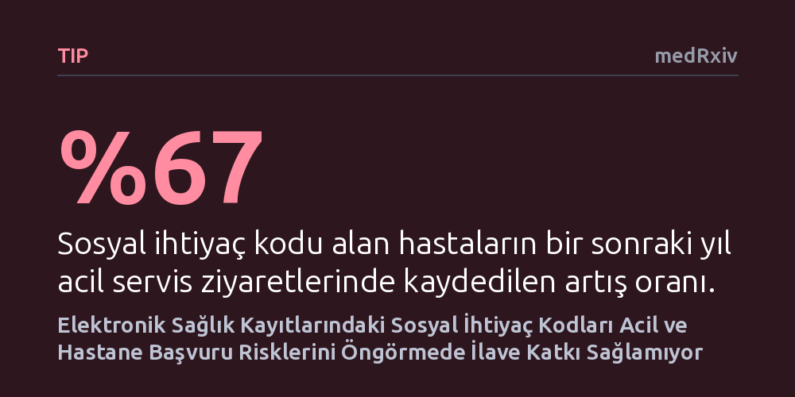

TIP · medRxiv · 2026-10-18
Araştırmacılar, 4,95 milyon hastanın verilerini inceleyerek sağlık kayıtlarındaki sosyal ihtiyaç kodlarının gelecekteki acil ve hastane başvurularını tahmin edip edemediğini araştırdı. Bulgular, kodlama oranlarının kurumlar arasında büyük farklılık gösterdiğini, risk artışının çoğunun idari süreçlerden kaynaklandığını ve klinik risk modellerine ek katkı sağlamadığını gösterdi.
Hastalara sosyal yoksunluk kodları atamanın, sanılanın aksine acil sağlık risklerini öngörmede veya klinik kaynakları doğru yönlendirmede tek başına güvenilir bir fayda sağlamadığını gösteriyor.

Sağlık kuruluşları son yıllarda yalnızca biyolojik hastalıklara odaklanmanın ötesine geçerek barınma, yetersiz beslenme ve ulaşım zorluğu gibi sosyal yoksunlukların sağlık üzerindeki etkilerini daha yakından takip etmeye yöneldi. Bu doğrultuda, özellikle ABD sağlık sisteminde "Z kodları" (özellikle Z59) olarak adlandırılan uluslararası tanı kodları, ihtiyaç sahibi hastaları sosyal hizmetlere yönlendirmek, bakım kalitesini ölçmek ve gelecekteki sağlık risklerini öngörmek amacıyla hasta dosyalarına giderek daha sık işlenmektedir.
Ancak bu yaygın uygulamanın temelinde henüz yanıtlanmamış kritik bir soru bulunuyordu: Hasta kaydına bir sosyal yoksunluk kodunun girilmiş olması, gerçekten o hastanın yaşadığı zorlukların şiddetini mi yansıtıyor, yoksa sadece o sağlık kurumunun ya da hekimin kayıt tutma alışkanlığının bir göstergesi midir? Şimdiye kadar hiçbir araştırma, bir hastanın dosyasında kod bulunmasının taşıdığı anlamı, salt "sisteme kaydedilmiş olma" durumunun getirdiği idari etkiden ayıramamıştı.
Eğer bu kodlar hastaların gerçek klinik gidişatını öngörmede bağımsız bir fayda sağlamıyorsa, sağlık politikalarının, kaynak tahsislerinin ve risk düzeltme mekanizmalarının bu kodlara dayandırılması hem kaynakların verimsiz kullanılmasına hem de hastaların yanlış değerlendirilmesine yol açabilir.
Araştırma ekibi bu belirsizliği gidermek amacıyla ABD genelinde 21 farklı sağlık sistemine yayılmış 4,95 milyon hastayı kapsayan geniş kapsamlı elektronik sağlık kaydı ve sigorta talep verilerini inceledi. Ayaktan tedavi muayenesinde dosyasında ilk kez bir Z59 sosyal ihtiyaç kodu açılan 26.153 yetişkin hasta belirlendi ve bu hastalar, demografik özellikleri ile klinik geçmişleri bakımından benzer olan fakat sosyal kod almamış hastalarla titizlikle eşleştirildi.
Çalışmanın yöntemsel olarak en güçlü yanı, tasarımın merkezine bir "negatif kontrol" yerleştirilmiş olmasıydı. Araştırmacılar, hastanın sosyal durumuyla hiçbir bağlantısı bulunmayan tamamen idari nitelikteki bir kod etrafında tüm eşleştirme ve analiz sürecini baştan sona tekrarladı. Buradaki amaç, ortaya çıkan risk farkının sosyal yoksunluktan mı yoksa genel olarak sağlık kayıtlarına herhangi bir idari kod girilmesinden mi kaynaklandığını kesin olarak ayrıştırmaktı.
Eşleştirilen hasta grupları tam bir yıl boyunca izlenerek acil servis başvuruları, planlanmamış hastane yatışları ve bu kodların mevcut klinik risk tahmin modellerine ne ölçüde ek katkı sağladığı çok değişkenli istatistiksel modellerle değerlendirildi.
Elde edilen veriler, sağlık sistemleri arasında sosyal ihtiyaç kodlama oranlarının yüzde 1 ile yüzde 24 arasında değişen muazzam bir tutarsızlık sergilediğini ortaya koydu. Hasta çeşitliliği ve hastalık yükü matematiksel olarak dengelendiğinde dahi bu kurumlar arası uçurum varlığını korudu; bu da kodlamanın hastanın gerçek ihtiyacından ziyade kurumun kayıt alışkanlıklarına bağlı olduğunu gösterdi. İlk bakışta, sosyal ihtiyaç kodu alan bireylerin sonraki yıl yüzde 67 daha fazla acil servis ziyareti ve yüzde 43 daha fazla hastane yatışı yaptığı (her 100 hastada 62'ye karşılık 49 akut olay) belirlendi.
Buna karşın negatif kontrol olarak kullanılan idari kod analize dahil edildiğinde çarpıcı bir gerçek gün yüzüne çıktı: Tamamen idari nitelikteki kod, sosyal ihtiyaç kodunun acil servis ziyaretleriyle olan ilişkisinin yüzde 46'sını, hastane yatışlarıyla olan ilişkisinin ise yüzde 70'ini tek başına yeniden üretti. Dahası, yatış tarihlerinin en eksiksiz kaydedildiği beş sağlık sisteminde, sosyal yoksunluğa özgü herhangi bir hastane yatış fazlalığı saptanamadı. Evsizlik kodları acil servis kullanımını 2,5 kat artırarak öne çıksa da, sosyal ihtiyaç kodları genel klinik ve kullanım temelli risk tahmin modellerine hiçbir kurumda ilave bir tahmin gücü katmadı.
Maliyet analizlerinde, kod alan hasta başına acil servis ve önlenebilir hastane bakımı fazlalığının yıllık yaklaşık 2.000 ila 2.500 dolar civarında olduğu hesaplandı ve en belirgin acil servis yükünün kamu destekli Medicaid güvencesine sahip hastalarda yoğunlaştığı görüldü.
Bu çalışma, hasta kayıtlarına sosyal yoksunluk kodları girmenin tek başına klinik riskleri öngörmek için yeterli veya güvenilir bir gösterge olmadığını açıkça ortaya koyuyor. Dosyada bir sosyal kodun varlığı, hastanın acil bakım ihtiyacından çok, sağlık sistemiyle daha sık ve yoğun temas kurarak idari süreçlerin radarına girmiş olmasını yansıtıyor.
Sağlık yöneticilerinin ve politika yapıcıların, risk tahminlerini ve bütçe planlamalarını standartlaşmamış bu kodlar üzerine kurmaktan kaçınması gerekiyor. Sosyal riskleri gerçekten azaltmak ve dezavantajlı gruplara ulaşmak için elektronik dosyalardaki idari kodlara bel bağlamak yerine, doğrudan ve tutarlı tarama yöntemlerine ve gerçek sosyal destek ağlarına yatırım yapmak çok daha gerçekçi bir yol olarak öne çıkıyor.